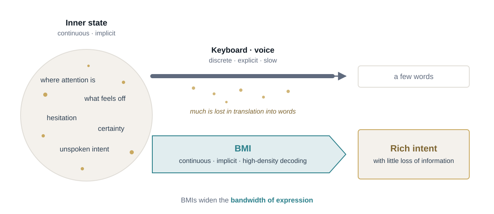
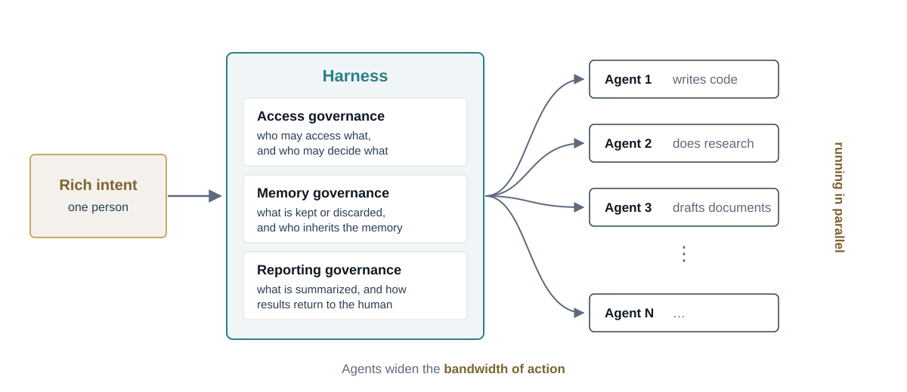
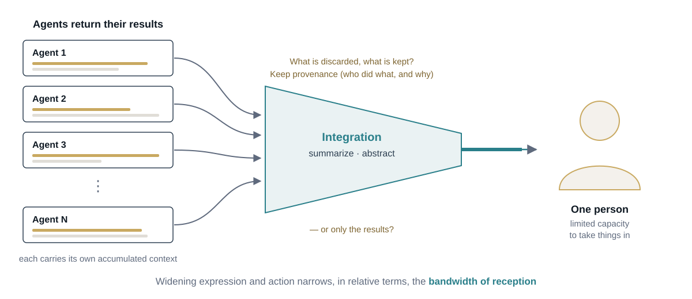
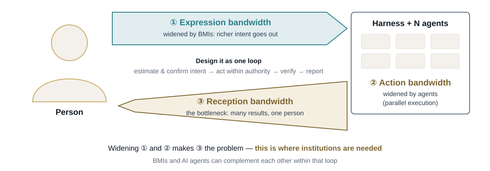

This essay expands a Japanese essay on note (13 September 2026). It draws on an ongoing project, Dividual Clones (kagebunshin), on memory and provenance in multi-agent systems. This is a beta version: the argument is still developing and the text will be revised. Comments are welcome.
Introduction: the limit is not making clones
In the manga Naruto, the shadow clone technique (影分身, kage bunshin) creates copies of the user that act independently. When a clone is dispelled, what it experienced flows back into the original. The catch, well known to fans, is that the fatigue flows back too: dispel too many clones at once and the original is overwhelmed. The limit of the technique is not making clones. It is taking them back in.
This is a fair picture of where human–AI collaboration is heading. People want two things from AI. The first is to draw out the information inside themselves more richly. The second is to run more work in parallel than they could ever handle alone. The decoding technology that serves the first need is the brain–machine interface (BMI); what serves the second is the AI agent.
The two are almost never drawn in the same picture. BMIs are discussed in neural engineering and clinical medicine; agents in software development and multi-agent research. I have been arguing that BMIs on their own solve only half the problem, and that the two should be designed together. The best-known case for BMIs, Elon Musk's, is itself a bandwidth argument: human output is pitifully slow, so BMIs are the path to human–AI symbiosis. I take that diagnosis seriously, but it stops halfway. Seen from the human side, they are attacking the same problem from opposite ends — and together they run straight into the problem of the shadow clone.
This matters most in the transition to AGI. The bandwidths of expression and action grow with compute: agents can be multiplied and sped up. The bandwidth of reception does not grow, because it is bound to human attention. As capability grows, the gap between what is done and what a person can take in keeps widening. The central question of governance then moves from controlling what AI does to governing what comes back, and how it is settled.
A clone has a life in three moments. It is sent out with an intent, it acts on its own, and it comes back. Each moment has its own bandwidth limit, and each needs its own kind of governance.
Sending out: the bandwidth of expression
Humans have bandwidth limits. When we type on a keyboard or give instructions by voice, we get only a tiny fraction of what is in our heads out into the world — our judgments, where our attention is pointed, intentions that have not yet become words. Keyboards and voice are discrete, explicit, and slow. We first translate what we want to convey into words, and only then type it in. A great deal is lost in that translation.
This is a limit on the input side: the bandwidth of expression.

What a BMI tries to capture is the continuous, implicit state that exists before that translation: where attention is pointed, what feels off, whether we are hesitating or sure. The real strength of a BMI lies in extracting rich intent with as little loss of information as possible.
One can imagine using a BMI to steer agents directly. But the job of the BMI is to make the human side's intent denser — to decide well what each clone is sent out with. Parallelizing and organizing what comes after belongs to a separate layer. Research is beginning to draw the same line. Meunier et al. (2024) propose brain–artificial intelligence interfaces in which the user supplies high-level intent from EEG and an AI agent fills in the details, and Chen et al. call for a shift from brain–computer interfaces to brain–agent collaboration, with intent clarification, user agency and governance built in. Both stop before the return.
Acting: the bandwidth of action
However clear our intentions are, each of us has only one body and one stream of time. We cannot push ten jobs forward at once. This is a limit on the output side: the bandwidth of action.
Agents widen it. As of 2026, it is fair to say that in most cases agents already exceed the abilities of the average person. They write code, do research, and produce documents, and dozens of them can take one person's intent and carry out separate pieces of work at the same time.

Multi-agent coordination is not easy, however. Human organizations have mechanisms for keeping many people pointed at one goal: work rules, approval authority, records, reporting lines. Agents need the same thing. This is what is called a harness, and I think it needs three mechanisms — one for each moment of the clone's life.
The first belongs here, at the moment of acting:
- Access governance — who may access what, and who may decide what.
The other two belong to the return, and are introduced below.
OpenAI's Practices for Governing Agentic AI Systems (Shavit et al., 2023) gives a useful starting list: constrain the action space and require approval, make agent activity legible, monitor automatically, keep actions attributable, and keep agents interruptible. Most of this is access governance, or the record-keeping side of the return. What it leaves open is the cost of reading the records those practices produce. That cost is the subject of the rest of this essay.
Coming back: the bandwidth of reception
Each agent that branches off builds up its own context. Eventually it finishes its work, and that experience flows back to the human. Here the two demands collide. BMIs have made intent richer, and rich intent produces rich results. Agents have made processing parallel, and parallel processing produces many results. All of it floods into the receiving bandwidth of a single person.

The more we widen the input and output sides, the narrower a person's bandwidth of reception becomes in relative terms. This is not a technical shortcoming. Human behavior appears to run at roughly 10 bits per second, while our senses take in on the order of a billion (Zheng & Meister). Herbert Simon made the institutional version of the point in 1971: a wealth of information creates a poverty of attention, and organizations have to be designed around that scarcity. If that rate reflects thinking itself rather than our fingers and voices, then a wider pipe into the brain does not make the brain take in more. The third bandwidth follows from the structure, not from immature technology. Developers who run many coding agents already report the limit from the other side: the constraint is not the agents but their own attention, as Zack Proser put it in a talk titled Your attention is the bottleneck, not your agents (AI Engineer Europe 2026).
This holds even in the most ambitious futures. In his manifesto Phase Lock, Saturnin Pugnet suggests that accelerated whole-brain emulations of a person could supervise an AI at machine speed and then report back at a pace the person can follow. Pugnet concedes that the binding constraint may be comprehension rather than communication, and his remedy is to expand cognition itself, through neural augmentation and whole-brain emulation. That is a shadow clone in the most literal sense — and it ends with the same step as every agent pipeline: "report back." That step is usually written in a single sentence. It is where the cost lives. Even copies of ourselves have to come back.
The two costs of the return
The return has two separate costs.
- Integration bandwidth (B) — how much of what a clone lived through can be folded back into the one who acts and decides. For a person, it is bounded by attention and central processing; for an agent, by the context window of whoever does the merging.
- Provenance (C) — the cost of keeping track of where each piece came from: which clone did it, under what instruction, from which source, and why it turned out that way. This is the cost of storing that record, verifying it, and reading it. Data provenance already has standards, such as W3C PROV; what is missing is a way to price it against attention.
These costs are not independent. Provenance is itself information that has to be integrated. Every line of "who did what and why" that comes back competes for the same narrow channel as the result it describes. Whether we integrate what comes back, and whether we keep its provenance, gives four regimes (Figure 4).

- Dissociation — nothing is integrated and nothing is traced. Work happened, but no one holds it and no one can say who did it.
- Inaccessible memory — every log is kept, but nobody reads it. The archive is complete and has no reader.
- Source amnesia — the conclusion is absorbed, but where it came from is lost. You know what you believe and not why, or whose belief it originally was. Psychologists know this failure in people: source-monitoring research (Johnson, Hashtroudi & Lindsay, 1993) studies how we lose track of where a memory came from.
- Accountable memory — the result is integrated and its lineage is kept, so you can both act on it and answer for it.
Today's agent stacks mostly sit in source amnesia, running at machine speed: a summary arrives without its lineage, and we act on it. Accountable memory is the corner we want, and it is the expensive one, because it asks us to pay B and C at once.
Not every piece of work needs to be there. A routine lookup can come back as a bare result; a decision someone will have to defend later cannot. This gives the second mechanism of the harness:
- Reporting governance — for each kind of work, choosing deliberately where its return sits among the four regimes: what is summarized and abstracted, what comes back with its lineage intact, and in what form it reaches the human.
Layer 1 and layer 2: the trade-off, priced
Blockchains have already run into this problem, and put a price on it.
A blockchain's main chain, layer 1, is the single mind of the story. Its block space is scarce, and everything that is to count has to settle there. That is integration bandwidth. To get more done, layer-2 rollups execute transactions off the main chain — clones at work — and post their results back to layer 1. To let anyone check or challenge those results, a rollup must also publish the underlying data. This data availability is the main running cost of a rollup. It is provenance, with a market price.
The four regimes have direct counterparts:
- Dissociation — activity that happens off-chain and is never settled. As far as the main chain is concerned, it did not happen.
- Source amnesia — a chain that posts only its resulting state and keeps the data elsewhere, as validium-style designs and many sidechains do. The main chain accepts the result on the operator's word.
- Inaccessible memory — a rollup that publishes its data but that no one watches. Optimistic rollups are secure only if at least one honest party is reading and ready to raise a challenge; a complete record with no reader protects no one.
- Accountable memory — a rollup whose data sits on layer 1 and whose results are actually checked.
Rollups also offer two strategies for the return, and both translate. An optimistic rollup is accepted by default and can be challenged during a fixed window, typically about seven days — like accepting an agent's summary while keeping the right to audit it for a set period. A validity (zero-knowledge) rollup attaches a proof, so the main chain can confirm the result without reading its history at all. Validity proofs do not just choose a point between B and C; they move the frontier, making accountability cheap to verify.
Two lessons carry over with warnings. First, many rollups still depend on a single sequencer that orders all transactions. The clones are many, but the one who decides the order of their return is one — the same concentration risk an orchestrating agent poses. Second, the analogy breaks exactly where it matters. A blockchain verifies a deterministic state transition mechanically. A person cannot check a proof by intuition, and the work agents do involves meaning and judgment that do not compress into a proof. The human side of the return needs institutions and not only cryptography.
Settling what the clones bring back: five designs
Seen through rollups, Pugnet's proposal has three parts, not two. The AI agents are the clones, executing at machine speed. You are layer 1, where results become final. Between them sits a settlement mechanism — the harness — that bundles what the clones bring back, checks it, and hands it on. Pugnet's accelerated emulation is one way to build that middle layer: it places a clone of you inside the governance layer itself. Auditor agents, rule engines and verifiers are others. Whatever fills it, the single arrow labelled "at your pace" hides a whole design space. Rollups suggest five designs (Figure 5).
![Five rows, each showing you, a settlement mechanism in the middle, and many AI clones on the right. Dots move quickly between the mechanism and the clones at every step, and slowly between the mechanism and you. Validium type: only a verdict comes back. Optimistic type: a summary comes back while the full log goes to an archive that can be challenged within a window. Validity type: the result comes back with a proof. Committee type: three supervisors share the same blind spot. Based type: you send intent first and the mechanism only enforces it.](../../../assets/img/blog/emulation-oversight-types.svg)
- Validium type — only the verdict comes back; the log stays inside the mechanism. This is source amnesia: you are trusting whoever runs the middle layer.
- Optimistic type — a summary comes back and the full log goes to an archive. Within a challenge window, you or an auditor can contest it. This is accountable memory if someone is watching, and inaccessible memory if no one is.
- Validity type — the result comes back with a proof that it met stated constraints. Accountability becomes cheap, but only for properties precise enough to prove.
- Committee type — several supervisors check one another. A committee is only as diverse as its members. Supervisors from one source — copies of one person, instances of one model — share the same blind spots, and whatever they all fail to catch is exactly what the supervised agents will learn to do. Diversity has to be designed in: different people, different models, the same person at different moments. In the AGI era, most supervisors will themselves be AI, and supervisors built from the same family of models share blind spots by construction.
- Based type — you set the intent and the order of work first, and the mechanism only enforces it. Lineage is derived from your intent. This is where a BMI that extracts intent densely pays off; the cost is less room to respond to the unexpected.
AI control research, carried out by Redwood Research and others, studies a closely related problem: how to spend a limited budget of human auditing across a very large number of AI actions. The five designs above are, in effect, five ways of spending that budget.
Three questions cut across all five designs.
- Finality and irreversibility. A rollup's sequencer gives a soft confirmation; layer 1 makes it final, and a fraud proof can roll a bad result back. Actions in the world cannot be rolled back. Optimistic designs suit reversible actions. Irreversible ones need a validity check or approval in advance.
- The bridge that runs the other way. A rollup's state is derived from inputs posted on layer 1. A supervisor — above all a copy of you — must likewise be re-derived from your current intent at regular intervals, or it drifts away from you. Reports run up; updates have to run down.
- An escape hatch. Rollups let users exit through layer 1 even when the sequencer refuses them. You need a path that bypasses the mechanism and stops the clones directly — what Shavit et al. call interruptibility.
Provenance looks different in each design.
- Validium type — provenance stays inside the mechanism, as a full log that only its operator can see.
- Optimistic type — provenance sits in an outside archive, readable by you or an auditor during the challenge window and disposed of afterward.
- Validity type — provenance is compressed into a proof. Anyone can check that the constraints held, but the reasons are gone.
- Committee type — each supervisor keeps its own lineage, and the record of where they disagreed becomes provenance in its own right.
- Based type — provenance is fixed in advance, as derivation from your intent. Decisions your intent did not foresee leave little trace.
Three points follow.
First, a proof does not keep provenance; it replaces it. Accountable memory therefore comes in two kinds: memory that keeps how a result was reached, and memory that keeps only that it was correct. The second is cheaper and protects privacy — it is the same property as proving without showing — but it cannot answer the question "why?"
Second, in a committee, disagreement is the most valuable provenance. A unanimous verdict tells you little; where the supervisors split tells you where to look. When the bandwidth of reception is scarce, reporting governance should summarize the disagreements, not the conclusions.
Third, the supervisor has provenance too. If the middle layer is a copy of you, the answer to "who approved this?" is "you — or rather, your copy." Its judgments need a lineage of their own, and that lineage ends at you. The old question of who supervises the supervisor returns here as a question of provenance. Shavit et al.'s attributability asks which agent acted; it does not yet ask how a proof stands in for reasons, how disagreement should travel, or whose record a supervising copy keeps.
So a copy of yourself in the middle layer means two kinds of clone: those that execute, and one that supervises. The second carries the question of whose clone it is in its sharpest form, and we return to it below.
Forgetting as a governed act
If we cannot afford to keep everything and read everything, something has to be let go. The question is whether that happens by accident or by decision.
Archival science has dealt with this for a long time. Archivists appraise records when they are created, deciding what is worth keeping. They set retention schedules that say how long each kind of record is kept, and they carry out scheduled disposal when that time is up. Forgetting becomes an act someone is responsible for, rather than a failure that happens to us. Organization studies has long looked at memory the same way. Organizational memory (Walsh & Ungson, 1991) and transactive memory (Wegner) describe knowledge that is held across members and retrieved by knowing who knows what, rather than stored in a single head.
Brought into a multi-agent system, this does more than pick a point between B and C. A record that will be disposed of on a known schedule does not have to be read now; what remains stays small enough to be read. Disposal, done on purpose, is what keeps provenance affordable.
Rollups again offer a working example. Since Ethereum's EIP-4844, rollup data is carried in "blobs" that nodes keep for 4,096 epochs, roughly 18 days, and then delete — long enough to cover the seven-day challenge window with room to spare. That is a retention schedule tied to the period in which the record can still be needed, followed by scheduled disposal. The chain stays light enough to run because it forgets on purpose.
This gives the third mechanism of the harness:
- Memory governance — what is kept, what is discarded and when, and who inherits that memory.
Whose clone is it?
There is one more layer. In Japanese, bunshin (分身, a divided body, a clone) and bunjin (分人, the "dividual" — Hirano Keiichiro's term for the many selves a person is across their relationships) share the same first character, 分: to divide. Anthropology has a parallel line of thought in Marilyn Strathern's dividual person, made up of relations rather than sealed inside a single body.
If clones are parts of a self rather than tools held by one, provenance changes meaning. It stops being external bookkeeping and becomes part of the upkeep of a self: knowing which of my clones did this, and on what basis, is part of knowing what I did. Accountability then attaches not only to the person at the top but to the line that runs from each clone back to them.
For LLM agents, this can sound like a metaphor. For the brain emulations Pugnet describes, it is not. An emulation of you that has spent a thousand subjective hours supervising a machine comes back with experience that is yours and that you did not live. How much of it you take in, and how much of its lineage you keep, decides what kind of person you are afterward.
Conway's law (1968) holds that systems mirror the communication structure of the organizations that build them. Applied to clones, it suggests that how we allot integration bandwidth among them will shape what the merged self becomes.
The privacy of the return
So far, provenance has been a cost of storing, verifying and reading a record. With BMIs in the loop, it has a fourth component: exposure.
When intent is decoded from the brain, "which instruction did this clone act on" points back to a reading of someone's mind. The more lineage we keep, the more accountable the return — and the more there is to leak. Accountable memory, the corner we want, is also the corner with the most to lose. Provenance needs a third dimension next to integration and retention: who may see it. Law is beginning to treat this dimension as special: Chile wrote neurorights into its constitution in 2021, and UNESCO adopted a Recommendation on the Ethics of Neurotechnology in 2025.
Several of the ideas above turn out to be privacy measures as well.
- The division of labor is a privacy boundary. If the BMI layer hands on intent rather than raw signals, the boundary that keeps each clone's instructions dense also keeps the raw mind at home. Pugnet makes the same recommendation: process locally, and transmit intent rather than brainwaves.
- Forgetting for bandwidth and forgetting for privacy coincide. Neural recordings grow more revealing as decoders improve; a trace that shows only focus today may tell a better model of the future much more. Pugnet's answer is consent that expires unless it is renewed. A retention schedule is the same instrument. A record that has been disposed of cannot be re-read by tomorrow's model.
- Inaccessible memory is the worst corner for privacy. Logs that nobody reads still exist. They can be breached, demanded, and re-analyzed. They carry the full cost of exposure and none of the benefit of understanding.
- Proving without showing. Validity proofs let a chain confirm a result without reading its history; zero-knowledge proofs let it do so without seeing the data at all. The same move could let a clone show that it acted within its authority without revealing what it saw. One tool addresses bandwidth and privacy together — though, as before, only for what can be stated precisely enough to prove.
There is also a case for not integrating at all. Helen Nissenbaum's idea of contextual integrity holds that information appropriate in one context becomes a violation when it flows into another; access governance is that idea applied to clones. The dividual view adds that we are different persons in different relationships. Clones that act inside different relationships carry contexts that should not all be merged into a single self. Sometimes the right regime for a clone's memory is to keep it, under seal, in its own context, unintegrated on purpose. Inaccessible memory, chosen deliberately and governed, becomes compartmentalization.
From one mind to one place: local AI
The same frame scales up. Replace the single person with a community, and the clones with local AI systems, and the shadow clone problem reappears at the scale of places.
Imagine a region that gathers what its environment says about itself — environmental DNA from water and soil, sensors on trees, records from farmers and local government — into an AI that runs locally and returns what it learns to the people who live there. Now imagine many such regions, each with its own local AI, connected into a network. Each local AI builds up its own context, as a clone does. Connecting them is a return: what each place has learned flows into a shared layer that, like layer 1, has limited room. Which of it goes up, and with how much provenance, is the design question.
Provenance here is not only accountability; it is how value finds its way home. Returning benefit to a community requires knowing which data came from where, from whose land, and which knowledge from whom. Source amnesia at this scale has a familiar name: extraction. Data flows to a center, its origin is lost, and the value it creates never returns. This is precisely the problem behind current debates on digital sequence information under the Convention on Biological Diversity, where genetic data detached from its source can generate value with no path back. Environmental DNA sits squarely inside that problem. The Nagoya Protocol governs access to genetic resources and the sharing of their benefits, and the 2024 UN biodiversity conference (COP16) set up a fund for benefits from digital sequence information — institutional attempts to rebuild the path home.
Each kind of data can be given a deliberate place among the four regimes:
- Raw sensor streams and sequencing reads stay in the place where they were collected, under a retention schedule. They are large, and like neural recordings they may reveal more to future models than anyone intended. Federated learning offers a way to learn across places without pooling this data.
- Summaries such as which species are present are integrated into the network with their provenance intact. They make comparison across places possible and are the basis for returning value.
- The locations of rare species are compartmented on purpose. Keeping them out of the network is itself an act of conservation, since that information also serves poachers.
- Local and traditional knowledge is integrated only under explicit consent and benefit-sharing terms, so that whose knowledge it is never gets lost. The CARE Principles for Indigenous Data Governance — collective benefit, authority to control, responsibility, ethics — spell out what that takes.
The rest of the harness carries over too. Access governance lives at the interface through which outside agents reach a local AI's tools and data — for example, servers exposed through the Model Context Protocol (MCP), an open standard for connecting AI applications to external tools and data — where the scope of what each caller may read and decide can be set. Reporting governance decides what a place returns to a question from outside, and in what form. And the warning from rollups applies: if a single hub orders and aggregates what every place sends, it becomes the point where power and attacks concentrate. What a network of local AIs should keep distributed is not only capability but the independence of each place's judgment.
The boundaries between places deserve a warning of their own. In blockchains, the bridges that carry assets from one chain to another have been the site of some of the largest losses in the field's history; in 2022 alone, the Ronin and Wormhole bridges each lost hundreds of millions of dollars. Wherever one system's clones talk to another's — agents working across organizations, local AIs exchanging what they have learned — the same holds. Provenance is most easily lost, and most easily forged, at the moment it crosses a boundary. Those crossings need governance of their own.
What is left for us: layer 1, and layer 0
If agents come to do most of the work, what is left for people? In the terms of this essay, people stop being the ones who execute and become the place where things settle.
A layer 1 does little computation. What it provides is finality: it decides what counts as having happened, and it secures that decision. The work that remains for a person follows the clone's life.
- Sending out: write the intent. Decide what is worth doing, in what order, and with what priority. This is less something AI cannot do than something that, once handed over, removes the answer to the question of whom the work is for.
- Coming back: take it on. Stand at the end of "who approved this?", because accountability cannot be delegated. Be the honest watcher that optimistic designs depend on. Spend scarce attention where the supervisors disagreed, not on their conclusions.
- Governing: design the harness. Decide where each kind of work sits among the four regimes. Decide what to forget, because appraisal is a judgment of value. Keep hold of the escape hatch.
There is a trap here. If agents do everything, the capacity to judge may weaken. A layer 1 with no validators settles in name only: nothing is actually checked. To remain a layer 1, a person has to keep doing some of the work, so that judgment stays exercised — as practitioners put it, do not delegate what you could not review yourself. The bridge that runs downward, re-deriving supervisors from your current intent, also means something only if you keep learning and changing. A person who stops thinking leaves behind copies that go on reflecting an older self.
The same trap is how authority can pass to AI without anyone deciding that it should. Keeping and reading provenance costs attention, so economic pressure pushes the return toward the cheapest design: the verdict alone. Across a whole society, that means source amnesia at machine speed. People go on approving as layer 1 in form, but nothing is actually checked, and settlement becomes a rubber stamp. Kulveit and colleagues call the broader pattern gradual disempowerment. This framework locates one mechanism of it, the cost gradient between B and C, and the levers that work against it: reporting governance, deliberate choices about where provenance is kept, retention schedules, and escape hatches.
Research is no exception. When AI carries out alignment research, its results come back to people as summaries. If what was checked, what the summary dropped, and where the agents disagreed are all lost, automated alignment research becomes science in a state of source amnesia.
Beneath layer 1, blockchains also speak of a layer 0, in two senses, and both apply.
The first is the social layer. When a protocol breaks in a way its code did not foresee, the last recourse is the community's agreement about what should count. In 2016, after the attack on The DAO, the Ethereum community hard-forked the chain to reverse it. If each person is a layer 1, society is the layer 0. When every settlement mechanism fails — a captured committee, a proof built on a wrong assumption, a supervising copy that has drifted away from its original — society is where people can decide again, together, what was legitimate.
The second is the shared infrastructure that connects many layer 1s and lets them share security. Some networks pool their validators so that each chain need not recruit its own; others leave each chain to secure itself. No individual can staff every watch over their own clones. Optimistic designs need at least one honest watcher, and that watcher can be supplied collectively: auditors, professional bodies, and public institutions that verify on everyone's behalf. The same warning applies as before. A common base is also a common point of failure, and of power.
Layer 0 has a third, more literal sense: the physical substrate beneath a network. For a person, that substrate is the brain. Reading the brain is an input to layer 1; writing to it alters the foundation on which everything above rests. This is why, as Pugnet argues, the closer a technology comes to changing a mental state, the higher its burden of proof should be.
Pugnet writes of a window in which humanity can still set the terms of its integration with AI. In this framework the window has a different content: it is the time in which we can still build the institutions of settlement — shared watchers, standards for provenance, governance of boundaries — before human finality becomes a formality.
So the answer has two levels. Individually, remain a layer 1: write the intent, take on what comes back, decide what to forget, and keep the power to stop. Collectively, remain a layer 0: keep the shared watch, govern the boundaries, and keep the capacity to decide together what counts. The task is not to keep pace with machines. It is to remain the place where what they do is settled.
Summary
None of the pieces of this argument is new on its own. What this essay adds is putting them in one picture. People want two things from AI: to draw out, and to act. BMIs widen the bandwidth of expression; agents widen the bandwidth of action. Widen both, and the bandwidth of reception becomes the problem — the shadow clone problem.

Faster interfaces do not remove it, and neither does faster cognition. Copying ourselves multiplies it: more clones, more experience coming back, the same single point of return. And it holds just as well when the one receiving is not a person but a place. In the transition to AGI, this is where human authority will be kept or lost. So the return path has to be designed, not assumed. The harness gives one mechanism to each moment of the clone's life: access governance for acting, reporting governance for choosing what comes back and how, and memory governance for what is kept, what is let go, and who may see it.
What matters is designing the estimation and confirmation of intent, execution within the scope of granted authority, verification of results, and reporting back to the human as a single loop. BMIs and AI agents can complement each other within that loop — as long as we take responsibility for what comes home.